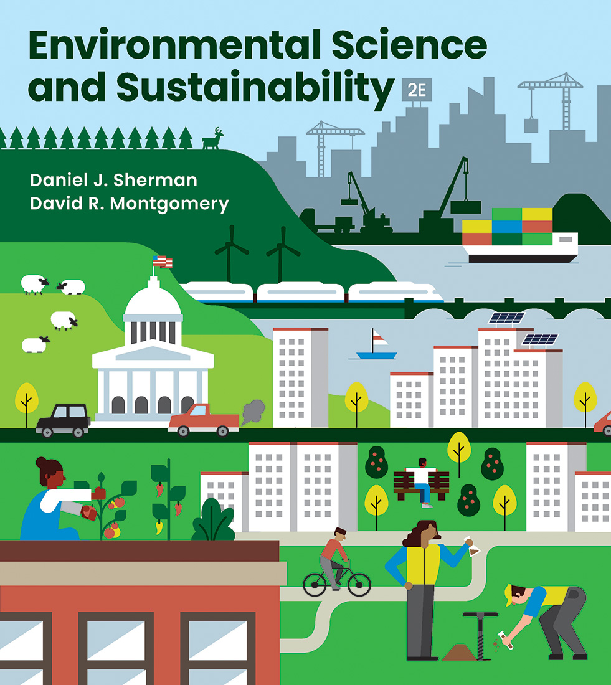
Here's what's on deck. Check Canvas for full instructions and submission links.
Due dates to be announced — mark your calendar once they're posted.
Ecosystem services: humans rely on natural systems for oxygen, clean water, climate regulation, and nutrient cycling.
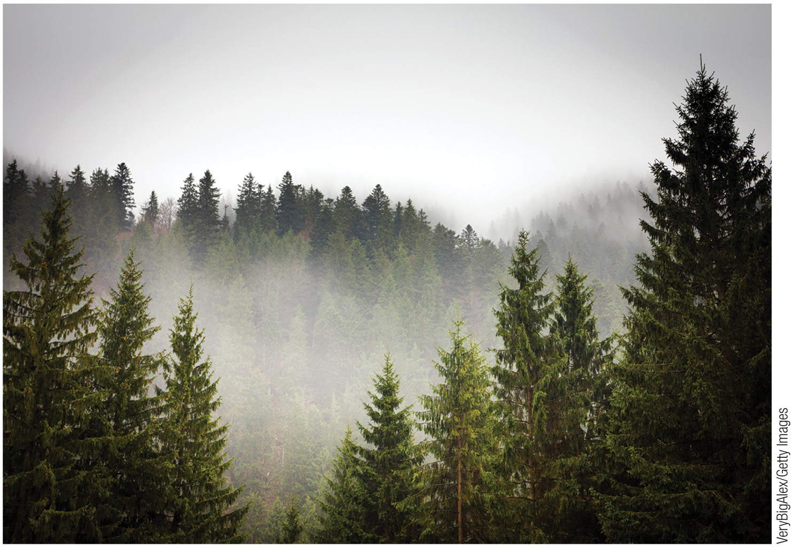
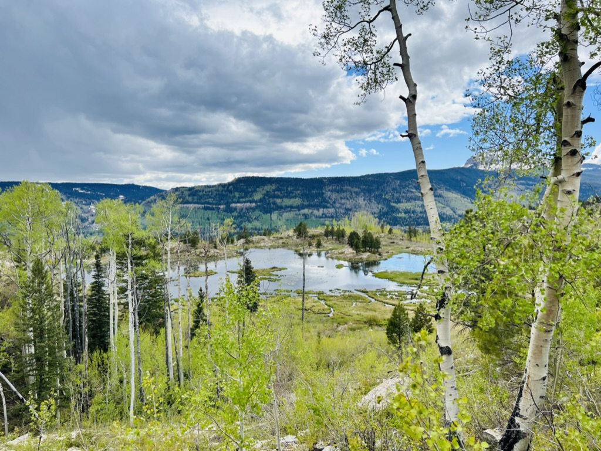
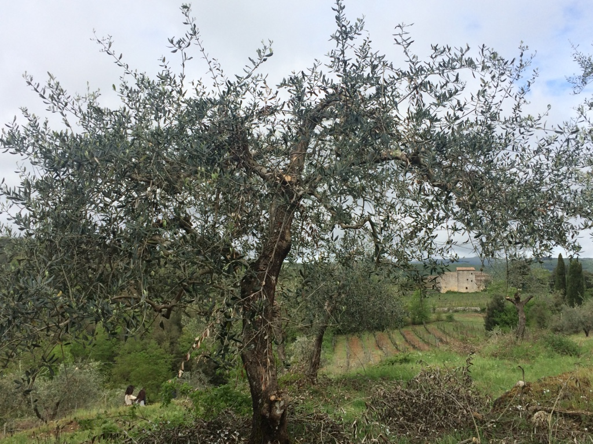
UN definition (1987): “Development that meets the needs of the present without compromising the ability of future generations to meet their own needs.”
Sustainability lives where all three overlap — hover a card to find it on the diagram. Fall short on any one dimension and the whole thing stops being sustainable.
In 2015, all 193 UN member states adopted the 2030 Agenda for Sustainable Development — putting the triple bottom line to work as 17 shared global goals.
United Nations (2015). Transforming Our World: The 2030 Agenda for Sustainable Development, A/RES/70/1.
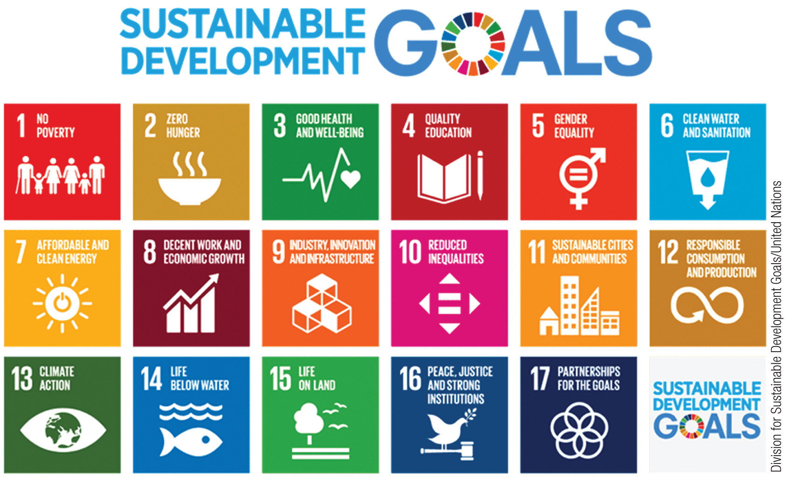
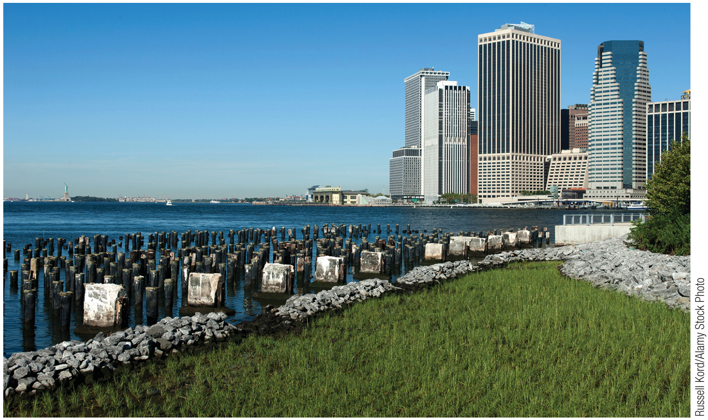
Earth-system scientists have mapped nine processes that hold the planet in the stable state civilization grew up in. Each has an estimated boundary; stay inside all nine and we stay in the safe operating space for humanity. As of the 2023 assessment, six of the nine have been crossed.
Tap any wedge on the wheel to swap this card.
Framework: Rockström et al. (2009), “A safe operating space for humanity,” Nature 461:472–475. All values from Table 1 of Richardson et al. (2023), “Earth beyond six of nine planetary boundaries,” Science Advances 9(37) — doi.org/10.1126/sciadv.adh2458. Live CO₂ record: NOAA Global Monitoring Laboratory — gml.noaa.gov/ccgg/trends/global.html
Rittel and Webber (1973) called planning problems wicked: unlike a math problem, they have no definitive formulation, no stopping rule, and no answer that is simply right or wrong — only better or worse.
Rittel, H. W. J., & Webber, M. M. (1973). Dilemmas in a General Theory of Planning. Policy Sciences, 4(2), 155–169. Climate change is often called a “super wicked” problem: time is running out, there is no central authority, and those seeking to solve it are also causing it (Levin et al., 2012).
EJ raises awareness that marginalized communities receive more of the harms of resource extraction and fewer of the benefits — such as clean air — and seeks to right these injustices.
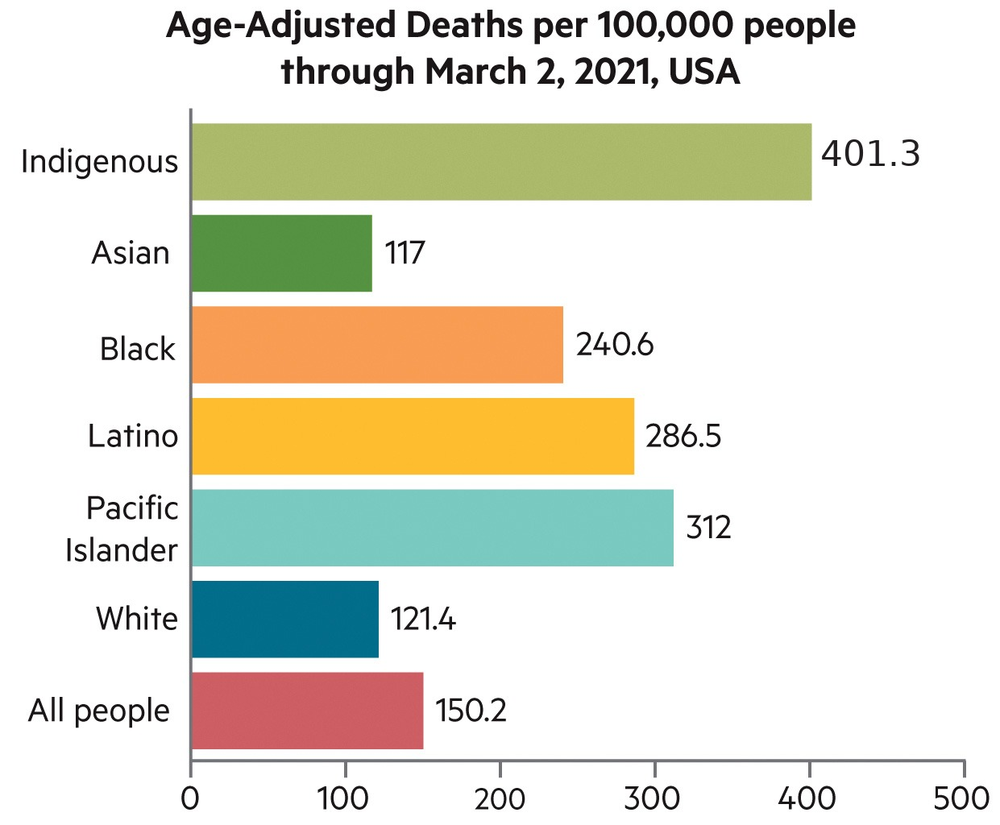
Case: Clair Patterson's 1950s lead research exemplifies serendipitous discovery while following the scientific process.
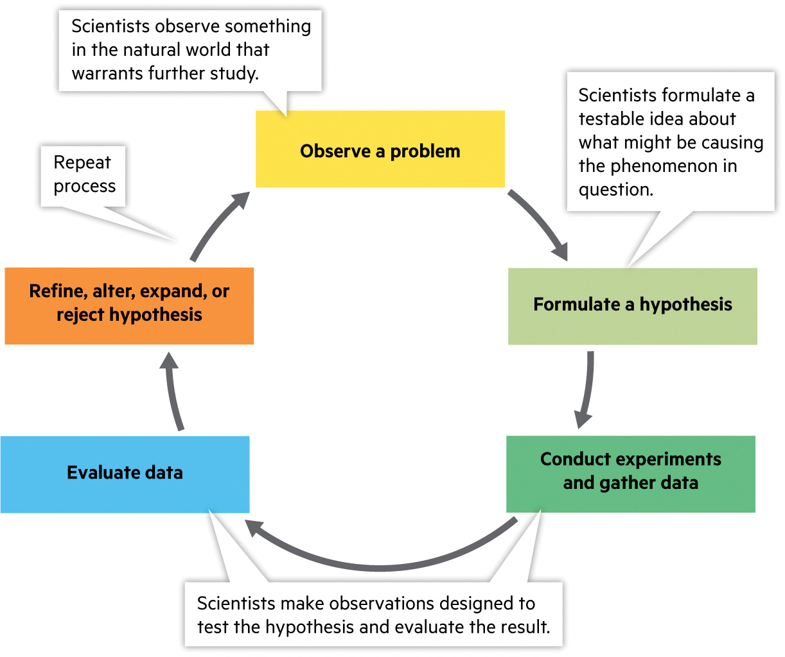
Probabilistic models account for uncertainty: they give the probability of possible outcomes rather than a single fixed value.
Easy to misinterpret! A 70% chance of rain doesn't mean it will definitely rain — it means that 30% of the time, it shouldn't.
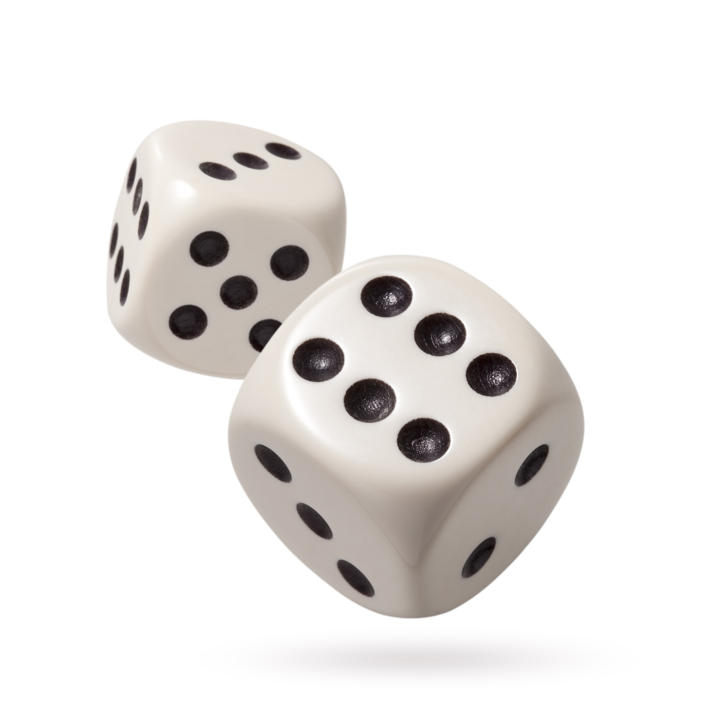
Peer review is the scientific community's main safeguard: experts assess whether a study's design and conclusions hold up before publication.
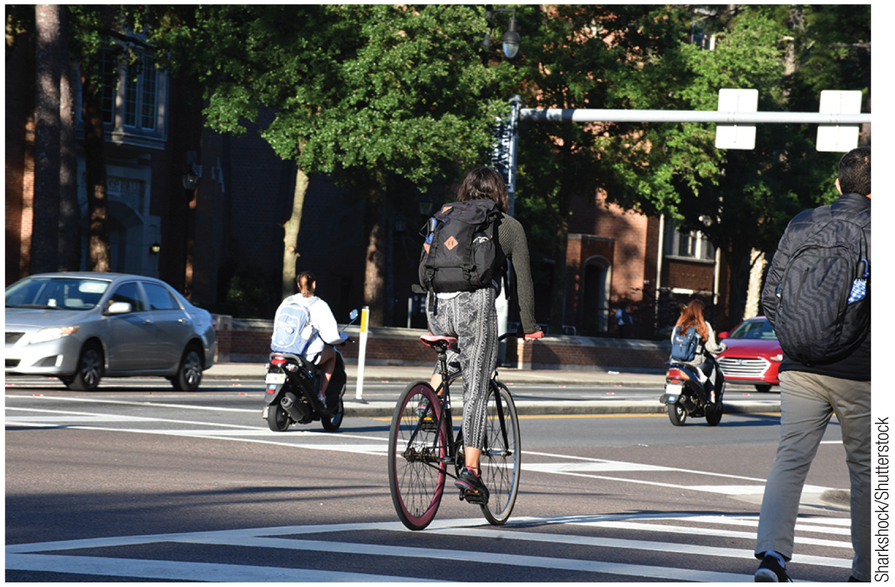
Ecological footprints are measured in global hectares (gha) per person. High-income nations consume far more than their share of Earth's biocapacity.
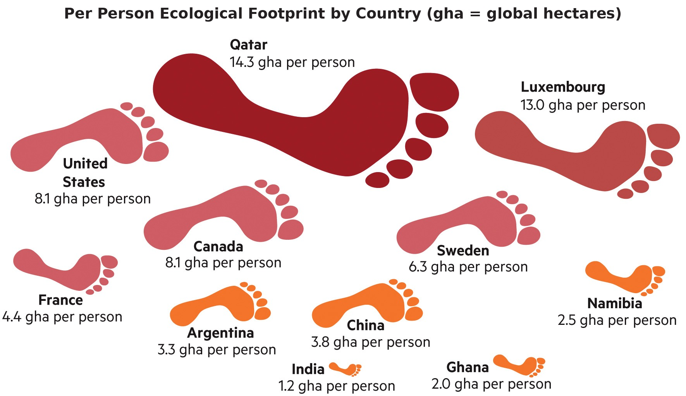
Sustainability problems are tangles of social, ecological, and technical parts. These interactive tools, drawn from the Module 1 systems-thinking material, let you feel how the pieces connect, tip, and feed back on one another.
A way of understanding and analyzing complex systems by examining the relationships and interactions between their components. Complexity: the whole is more than the sum of its parts. Take an apple: switch off any one part below and watch what happens to the whole.
Adapted from Center for Ecoliteracy (2018). Every label above is verbatim from the lecture slide.
Box labels are verbatim from the lecture slide; the descriptions and quick check are added for practice.
Four fragments. Look at any one of them on its own: a bit of green, a stub of brown, a red dot. None of them is a tree.
Everything is connected, and changes in one part of the system can affect other parts.
Non-linearity: Small changes can lead to disproportionately large consequences, and vice versa, and the relationships may not have direct correlation.
The photograph is a starling murmuration: no bird is steering the flock, and no bird contains the shape. That is emergence.
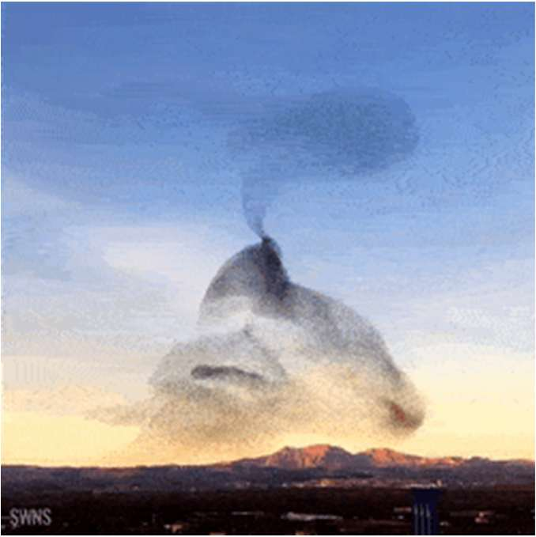
Push the pressure on this ecosystem and watch its health. For a long time it copes — then it crosses a tipping point and collapses in one step. Now try to undo it: pulling the pressure back does not bring it back. That gap is the point of no return.
Model: the classic grazed-ecosystem / shallow-lake regime shift dH/dt = H(1−H/100) − c·H²/(H²+h²), a fold bifurcation (Noy-Meir 1975; May 1977; Scheffer et al., Nature, 2001). Pressure is the grazing/nutrient load c.
Our personal impact on Earth — and how individual choices scale across societies.